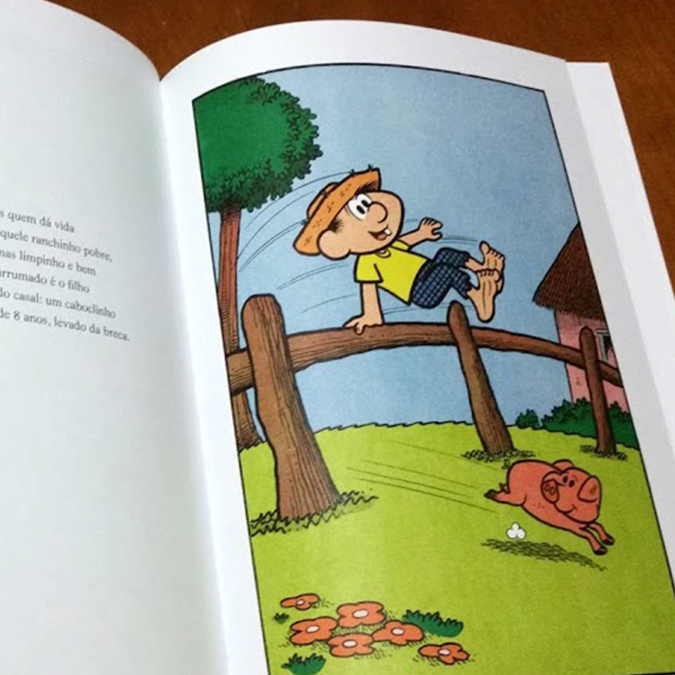
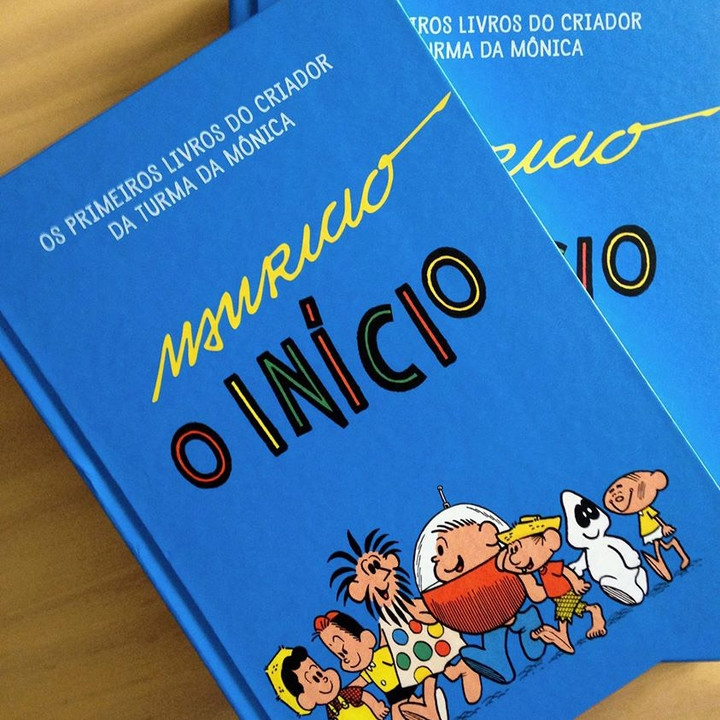

MSP · 80 Anos
212 Páginas
Capa Dura Álbum
Edição Histórica de Luxo
Mauricio — O Início · Diagramação em Formato Álbum
Diagramação clássica de livro infantil de luxo em formato horizontal com 212 páginas: a página par recebe o texto narrativo com entrelinha generosa e tipografia legível para leitura compartilhada entre pais e filhos; a página ímpar é dedicada à ilustração restaurada em toda a sua amplitude, com recuo calculado de calha para compensar a curvatura natural da lombada de capa dura encadernada.

Exemplar Físico Publicado
Volume único lançado na comemoração oficial dos 80 anos de Mauricio de Sousa, reunindo A Caixa da Bondade, Piteco e O Astronauta no Planeta dos Homens Sorvete.